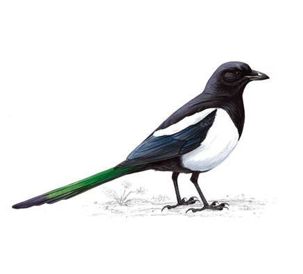

Eurasian Magpie
Fancy Latin name to impress your neighbours: Pica Pica
Magpies are members of the Corvid family, which means they are related to crows, a particularly intelligent species. The one you see knocking about your bins and back yard are called Eurasian Magpies, they are widely considered one of the most intelligent non-mammal creatures on earth. They are as intelligent as great apes and primates. They have exhibited signs of emotions such as joy and sorrow. They can also solve puzzles and have been seen using tools. They like to play games and are quite a sociable bunch, they tend to hang around in little gangs of family and friends. They are very adaptable when it comes to diet, they are scavengers and predators. You can hear them “chatter” on a regular basis these include “calls” for things from territorial disputes with other gangs to playing games. Magpies are always up to something! You can find them almost everywhere from your call centre/office car park to the roofs and alleys of your house. As they can recognise human individuals you can try feeding and befriending them. If they like you they will bring the others, get ready to build your magpie army!
